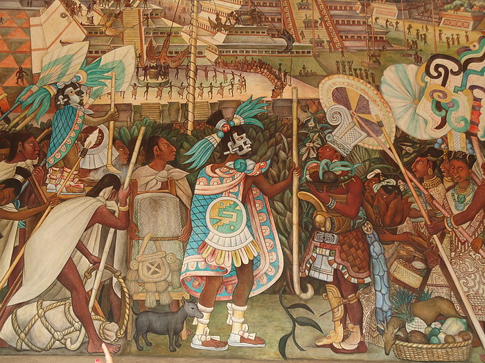
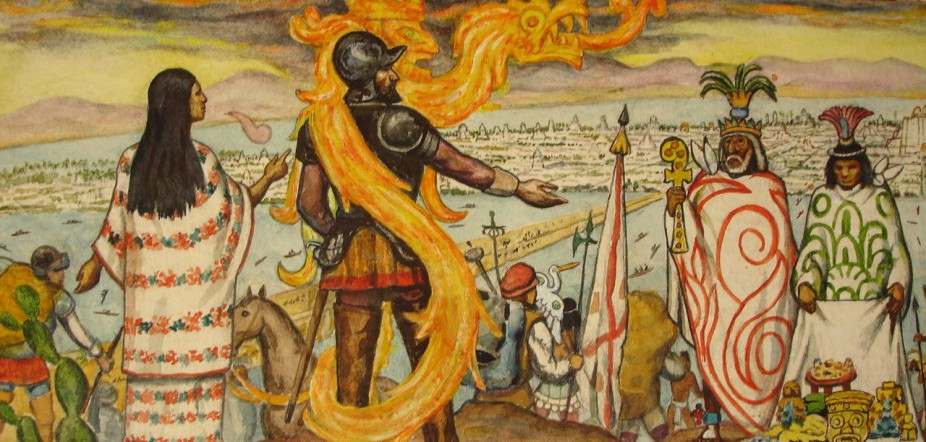
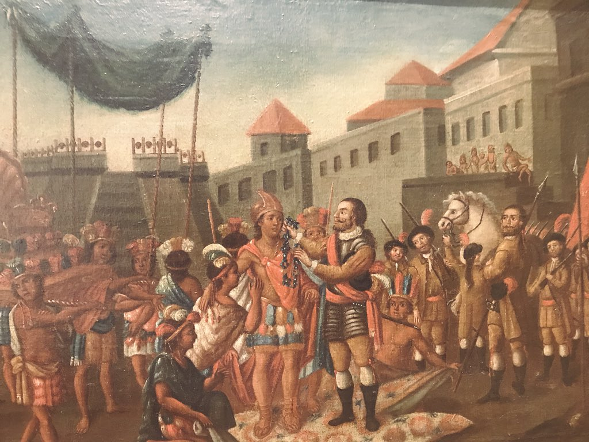
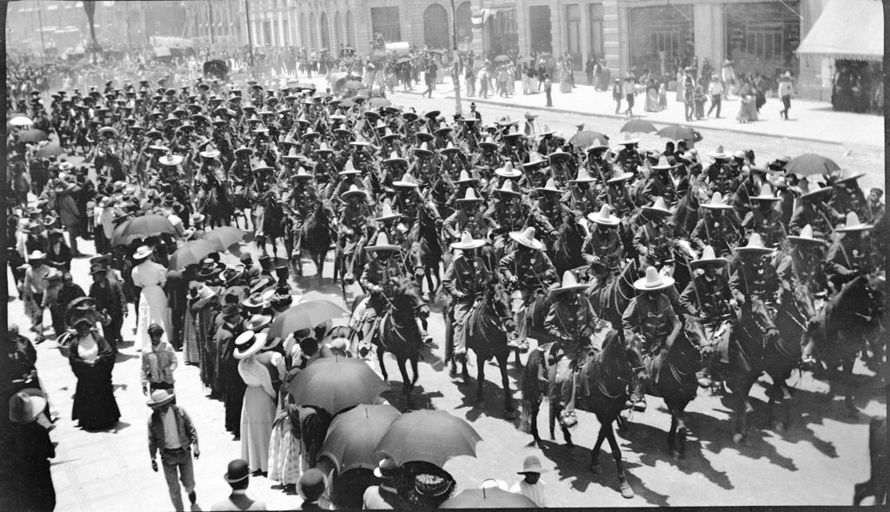
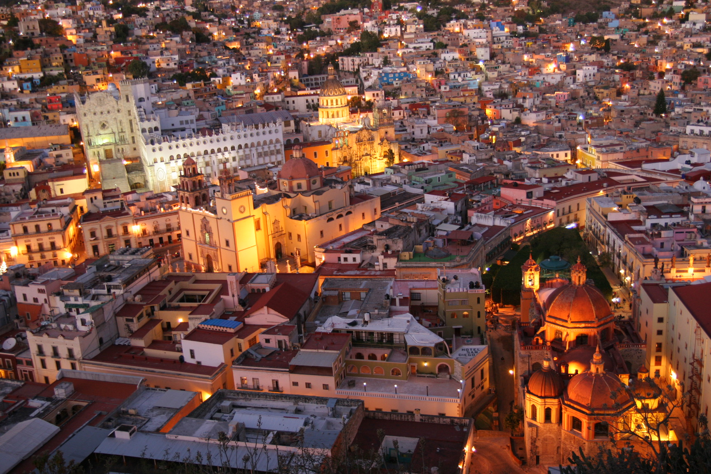

История Мексики
Чем же интересна история Мексики? Как и в любой стране у Мексики была бесконечная череда переворотов, мятежей и жестоких кровопролитий. Люди всегда стремились создать лучшее будущее. Посмотрим, какие попытки предпринимали в этом отношении народы Мексики. Каким образом происходило становление Мексиканских штатов? Какие бурные события разыгрывались на территории страны на протяжении последний столетий? Давайте перенесемся в прошлое и узнаем, что привело государство к тому состоянию, в каком оно предстоит перед нами сегодня.
По артефактам, найденным на территории современной Мексики, можно определить, что люди населяли эту местность за тысячи лет до н.э. Правда, историки затрудняются сказать, что за цивилизация процветала в то время. Строения и изделия невероятной сложности свидетельствуют об очень высоком уровне развития жителей той эпохи. Гораздо больше информации получено о более поздних цивилизациях индейцев майя, ацтеков, сапотеков, тольтеков и др. Эти народы вели бесконечные войны между собой, стремясь подчинить себе народы и территории. Но в этой статье мы подробнее обсудим историю Мексики в колониальный период, а также революции 19-го и 20-го веков.
Следующий этап истории Мексикиб была связана с Европой.
Завоевание европейцами
Согласно общепринятой истории первые европейские мореплаватели прибыли на территорию современных Мексиканских штатов в 1511 г. Это не было целенаправленное путешествие: у берегов полуострова Юкатан произошло крушение корабля, который направлялся из Панамы на Гаити. Большинство членов морской команды и пассажиров погибло. Имя одного из переживших кораблекрушение вошло в историю. Херонимо дэ Агилар сумел не только ужиться с местными племенами майя, но и проникся их культурой, освоил язык и впоследствии оказал огромную помощь Эрнану Кортесу в общении с индейцами. С 1517 г. по 1519 г. в целях освоения Мексики по указанию кубинского губернатора Диего Веласкеса были организованы три морские экспедиции. Последней он назначил руководить Эрнана Кортеса – видного деятеля на Кубе, богатого землевладельца и судью. Кортес уже успел завоевать расположение Веласкеса благодаря талантам дипломата и своим бесстрашным подвигам во время завоевания острова. Ставший впоследствии знаменитым, испанец основательно подготовился к экспедиции: снарядил 6 судов и привлек к участию около 300 отчаянных смельчаков. Людей очаровывали рассказы участников предыдущих экспедиций о несметных сокровищах мексиканских земель, к тому же они полностью доверяли своему предводителю.
Сначала испанские конкистадоры захватили город Табаско. Затем в августе 1519 года Кортес возглавил поход на столицу государства ацтеков – Теночтитлан. К нему присоединились отряды испанских солдат под командованием Нарваеса, которых Веласкес отправил арестовать непокорного Кортеса. Как ему удалось привлечь их на свою сторону? Подкупив золотыми сокровищами, которые индейцы преподносили в качестве подарков испанцам. В итоге, принято считать, что 2000 испанских завоевателей участвовали в покорении Мексики. Теночтитлан не сразу был захвачен испанцами. Отряды европейцев то подступали к городу, то пускались в бегство. Кортес пытался договориться с правителем ацтеков Монтесумой, применяя свои способности дипломата и интригана. Ему удалось привлечь на свою сторону тласкальцев – индейцев, враждующих с ацтеками. Они оказали существенную поддержку отрядам Кортеса в завоевании ацтекского государства. В итоге семидесяти дневной осады в августе 1521 года, Теночтитлан был захвачен конкистадорами и передан под власть Испанской короны. Восстановленный после разрушения, город Теночтитлан был переименован в Мехико и со временем стал столицей Мексики. В 1522 году завоевания Кортеса были официально признаны монархом Испании Карлом, который назначил его губернатором Мексики. Новоявленный правитель стремился упрочить влияние испанских захватчиков в подвластных ему территориях. Например, Кортес распределил земли среди своих солдат, велел им селиться в Мексике, строить города, обзаводиться семьями и вести хозяйство. Также экспедиции Эрнана Кортеса открыли и исследовали полуостров Калифорния. Вплоть до 1821 года мексиканские территории находились под властью испанского королевства. Колониальное господство жестоко угнетало местное население. У коренных жителей Мексики отнимали земли, их принуждали к непосильному труду на рудниках и плантациях, насильно обращали в католическую веру. К тому же из-за невиданных прежде болезней европейцев тысячи индейцев лишилось жизни. Если до прибытия конкистадоров на американский материк в Мексике проживало более 24 миллионов индейцев, то к 1600 году их было уже около 1 миллиона.
Революция XX в.
В истории Мекики было не мало революций, но я хотела бы акцентировать внимание именно на 20 в.
В 1910 году состоялись практические фиктивные президентские выборы, на которых в очередной раз «победил» Диас. Оппозиционер Франциско Мадеро, незадолго до этого эмигрировавший в США, в своем опубликованном обращении к народу обвинил Диаса в проведении незаконных выборов. Мадеро взывал к восстанию против диктаторского режима. Хотя по стране прокатилась волна жестоких репрессий, остановить назревающую революцию было уже невозможно. Слишком много было недовольных существовавшим положением. С весны 1911 года уже вся страна была вовлечена в гражданскую войну. В конце мая 1911 года Диас снял с себя президентские полномочия и эмигрировал во Францию, спасая свою жизнь. Режиму диктатора пришел конец, но мексиканская революция лишь набирала силу. Хотя президентом стал Мадеро, он пробыл у власти менее полутора лет. Он был убит заговорщиками, стремящимися захватить власть в стране. Это привело к установке военной диктатуры в Мексике и длившейся десятилетиями гражданской войне, которая то утихала, то разгоралась с новой силой. Памятным событием мексиканской революции считается принятие конституции 1917 года. Некоторые историки называют эту дату в качестве завершения революции в Мексике. Но фактически она продолжалась еще долгое время. На протяжении всего 20-го века политическая обстановка в Мексике была крайне нестабильной. В борьбе за власть лидеры страны бесконечно сменяли друг друга. То и дело вспыхивали восстания и мятежи, унося жизни тысяч мирных жителей.
Мексика в наши дни
Мексика занимает территорию около 2 млн. кв. км и находится на 13 месте в рейтинге самых крупных по площади государств. В списке самых густонаселенных стран она располагается на 11 позиции.
Столица Мексики – город Мехико, он расположен в центральной части страны на высоте чуть более 2 км. Город построили на дне древнего высохшего озера Тецкоко.